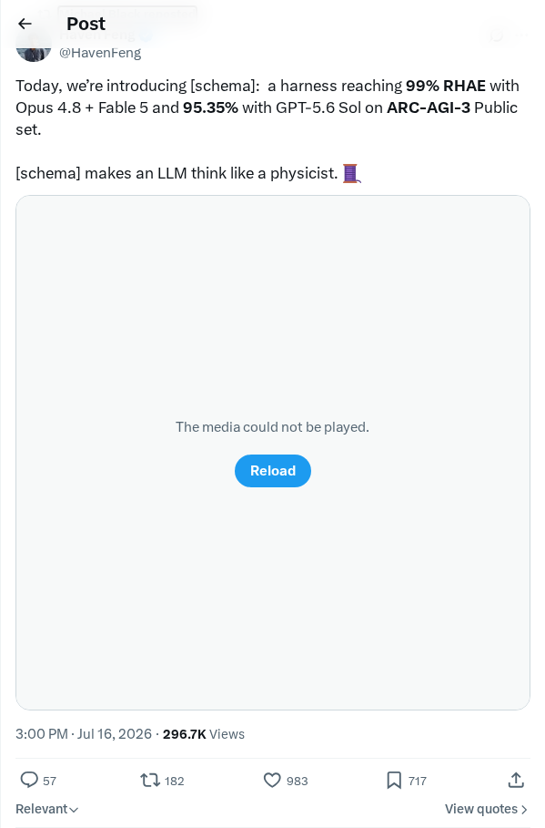

Cars24 集成 OpenAI 以扩展语音和聊天自动化
Cars24 集成了基于 OpenAI 的语音和聊天智能体，用于自动化客户互动并精简内部运营。通过实施这些 AI 驱动的系统，该汽车电子商务平台成功管理了每月超过一百万分钟的对话时长。此次部署使 Cars24 挽回了 12% 之前流失的潜在客户，并将智能体工作流分发到多个内部部门。这些集成使该公司能够高效扩展客户支持业务，并以比以往方法更快的速度构建对话功能。
AI 前沿资讯、研究与趋势精选
Cars24 集成了基于 OpenAI 的语音和聊天智能体，用于自动化客户互动并精简内部运营。通过实施这些 AI 驱动的系统，该汽车电子商务平台成功管理了每月超过一百万分钟的对话时长。此次部署使 Cars24 挽回了 12% 之前流失的潜在客户，并将智能体工作流分发到多个内部部门。这些集成使该公司能够高效扩展客户支持业务，并以比以往方法更快的速度构建对话功能。
Kimi 正式发布了其最新模型 Kimi K3，标志着对话式人工智能的重大进展。这款全新的对话式大语言模型旨在提供卓越的理解能力、更连贯的上下文感知以及更精细的响应生成。它专注于以更低的延迟处理复杂查询和长上下文，同时保持高精度。这一发布在 Hacker News 上引发广泛讨论，凸显了生成式 AI 领域日益激烈的竞争，开发者们正不断优化性能并扩展处理能力。
一个德国 AI 联盟正式发布了开源语言模型 Soofi S（300 亿参数）。该模型旨在提供本土化的语言优化，在英语和德语的多项权威基准测试中均名列前茅，成为 30B 参数级别中极具竞争力的开源替代方案。通过合作研究，该模型结合了强大的架构工程和优化的多语言训练语料库，在无需巨额许可费的情况下实现了卓越的效率、推理和上下文理解能力。
谷歌正式将其 AI 研究与笔记助手 NotebookLM 更名为 Gemini Notebook。此次调整将该工具更深入地集成到谷歌统一的 Gemini 生态系统中，强调其对 Gemini 模型家族先进能力的依赖。Gemini Notebook 继续在统一品牌下为用户提供合成文档、生成摘要和创建音频概览的工作空间。这一更名标志着谷歌对其消费者及企业级生成式 AI 功能的战略整合，专注于提供先进的上下文理解、文档分析和协同笔记解决方案。
Schema Harness 项目在 Arc-AGI-3 公共基准测试集上达到了约 99% 的准确率。由 François Chollet 设计的抽象与推理语料库 (ARC) 通过测试系统在基于网格的视觉任务中的适应性和推理能力，来衡量通用人工智能水平。Schema Harness 采用结构化且特定于领域的方法来提高复杂抽象任务的性能。这一里程碑展示了一个可扩展的框架，它架起了深度学习启发式方法与严格算法推理之间的桥梁，指向了更可靠、更具适应性的机器智能框架。
Traceforce 由 Xia 和 Varun 共同创立，推出了专为生成式 AI 应用设计的企业安全监控解决方案。该平台使企业能够深入洞察并控制公司设备上运行的 ChatGPT 和 Claude 等工具。Traceforce 可发现活跃的 AI 应用，并通过模型上下文协议 (MCP) 监控它们与内部及外部数据库的交互方式。为支持开发者，Traceforce 发布了 MCP-Xray，这是一种开源动态渗透测试工具，旨在检测这些模型上下文协议连接中的漏洞。
开发者 xhluca 推出了 Agent-talk，这是一个开源框架，旨在使多个自主编码智能体能够针对复杂编程任务进行无缝协作。该系统建立了结构化的通信协议，允许各个智能体共享上下文、协商任务分配并协作调试代码。这种多智能体方法解决了单智能体系统在处理大规模代码库和复杂逻辑时往往表现不佳的局限性。该代码库提供了编排这些专业智能体所需的基础工具、协议和环境。
一名开发者发布了一份技术指南，演示了如何在配备 6GB 显存的本地 Linux 台式机上训练用于底鼓合成的生成式 AI 扩散模型。该教程概述了在内存受限条件下使用 PyTorch 运行音频扩散模型的优化策略。通过详细说明数据准备、模型架构选择和训练流水线配置，该指南证明了专业的音频生成模型可以在消费级硬件上进行本地训练，而无需昂贵的云端 GPU。
一名开发者将经典的 QBasic Gorillas 游戏用原生 JavaScript 进行了重制，以此作为测试 AI 辅助开发方法和语言模型的实战项目。该 Web 实现利用 Fable 编译器和 Opus 框架，在保留原始游戏机制的同时增加了现代视觉效果。开发者强调，通过重制复古应用是探索 AI 驱动编码助手和生成式 AI 工作流能力的有效实践机制。
谷歌宣布其 Gemini Omni Flash 模型在文本转视频 (Text to Video) 和图像转视频 (Image to Video) 类别的 Artificial Analysis 排行榜上均位居第一。该基准排名凸显了该模型在多模态生成和处理方面的表现。Gemini Omni Flash 在处理复杂视觉输入和从各种提示词合成视频输出方面表现出高效率，标志着谷歌生成式 AI 产品迈出了具竞争力的里程碑。
Runway 推出了 Agent 2.0，这是生成式视频技术的重大进步，旨在建立一类全新的智能体视频工作流。该版本专注于提高自动视频生成中的叙事连贯性、电影语言和生产质量。通过转向自主的智能体系统模型，Runway 旨在简化复杂的视觉叙事，并缩小人类创意意图与自动化执行之间的差距。
谷歌将其 Gemini Omni 多模态 AI 模型集成到 Google Vids 中，以支持基于自然语言的视频编辑。此更新允许用户使用简单的文本提示生成和编辑专业品质的视频内容，最大限度地减少了对传统手动视频编辑技能的需求。此次集成旨在缩短整体视频制作时间，并代表了谷歌在整个 Workspace 套件中实施生成式 AI 功能的广泛努力。

研究人员宣布了一种新的评估工具，旨在测试模型在 ARC-A 基准测试上的推理能力，并展示了卓越的性能指标。当与 Opus 4.8 和 Fable 5 模型配合使用时，该工具达到了 99% 的相对人类平均努力 (RHAE)。此外，使用 GPT-5.6 Sol 模型进行的测试取得了 95.35% 的成功率，为高级推理和问题解决系统提供了更精确的评估方法。
此更新概述了大语言模型数学推理的历史演进，从 2023 年的基础熟练度扩展到 2024 年的高中水平，并在 2025 年达到了国际数学奥林匹克 (IMO) 金牌标准。这种进步也反映在刚刚讨论的 GPT-5.6 Sol Pro 中，该模型针对开放统计问题和复杂定量研究课题。
Google DeepMind 与 Isomorphic Labs 建立了战略合作伙伴关系，利用前沿 AI 模型开发针对健康爆发和生物风险的主动防御措施。该计划应用计算生物学和机器学习来构建预测基础设施并改善生物安全指标。此次合作旨在通过可扩展且精确的防御策略，保障公共卫生安全以应对新兴的生物威胁。
Kling AI 发布了一份技术演示，重点展示了其先进的文本转视频生成模型，展现了在时间一致性和真实感渲染方面的进展。该发布强调了模型从文本提示词合成连贯电影运动动态的能力。此外，Kling AI 向 Kuan Cheng 颁发了其 4K 短片创意大赛银奖，展示了视频生成工具的实际应用。
Claude 开发团队宣布全面重置用户账户的所有每周和五小时速率限制，以优化平台访问。此次基础设施调整旨在提供不间断的服务，并适应复杂专业工作流日益增长的使用量。限制的取消表明底层基础设施已成功扩展，可以支持高需求的生成式 AI 交互，且不会损害整体系统稳定性。
研究人员引入了 Ring-Zero，这是一个旨在将零数据强化学习（Zero RL）扩展到 1 万亿参数模型（命名为 Ring-2.5-1T-Zero）的训练流水线。该项目利用算法和系统优化技术（包括截断重要性采样、训练-推理比修正和混合精度控制），探索了在大规模下的训练动态和涌现能力。该 1T 参数模型表现出更高的采样效率，并自发产生了诸如自我验证和并行推理等高级认知行为。在七项数学基准测试中，该模型实现了具有竞争力的推理性能，同时生成了结构化且简洁的推理踪迹。
研究人员提出了 KnowAct-GUIClaw，这是一种新型 Know-Route-Act-Reflect 框架，旨在解决 OpenClaw 智能体系统中跨平台和自我改进的局限性。该系统采用主机智能体来分解长时程任务，并配备了一个可插拔的 GUI 子智能体，该子智能体具有经验归因记忆系统和自我演化的技能库。在 Android、iOS、HarmonyOS 和 Windows 上测试，GUIClaw 搭配开源 Kimi-2.6 模型在长时程 MobileWorld 基准测试中实现了 64.1% 的成功率，优于多个基线框架及闭源模型如 Seed-2.0-Pro 和 GPT-5.5。
一篇关于自我改进自主智能体的综述发表，将现代智能体定义为能够将经验转化为能力增益而无需人工干预的自适应系统。作者提出了一个系统级框架，定义智能体为基础模型与记忆、工具、提示词和控制逻辑等操作支架的结合。在此框架内，自我改进被概念化为针对模型参数或支架配置的自诱导更新算子。该综述根据更新目标、变化信号、应用和评估指标整理了现有文献，并维护了一个技术更新存储库。
一项关于带长度惩罚的强化学习研究发现，压缩思维链 (CoT) 推理过程使得驱动模型答案背后的潜在因素更难被检测。研究人员在不同目标长度下训练了 Qwen3-4B 和 Qwen3-14B 变体，并使用偏差提示干预对其进行评估。虽然压缩保持了多项选择题的准确性并减少了标记（token）使用，但它显著降低了模型的可监控性。在最强的目标压缩下，监控器捕获提示利用率的比率对于 Qwen3-14B 从 69% 降至 49%，这展示了压缩-可监控性边界，即更廉价的推理牺牲了透明度。
开发者发布了 PalmClaw，这是一个旨在在手机上本地运行并直接管理会话、记忆、技能和工具的开源智能体框架。与仅依赖点击和滑动等顺序 GUI 操作的传统移动智能体不同，PalmClaw 将原始设备功能公开为具有显式参数和定义执行边界的结构化工具。对该框架的实验评估表明，与最强的基线移动智能体设置相比，其任务成功率相对提升了 11.5%，完成时间减少了 94.9%。
研究人员推出了 Vinci2，这是一款旨在分析连续第一人称视角（egocentric）视频并决定何时在没有用户显式提示的情况下进行干预的本地主动助手。该团队还发布了 EgoServe，这是一个包含超过 3,000 个服务实例的基准测试，涵盖四个时间记忆周期和十个类别。为了解决这些任务，他们开发了 EgoMemo，这是一种无需训练、基于记忆增强的智能体，利用多尺度时间摘要、语义知识图谱和视觉嵌入来执行检索增强推理。EgoMemo 在 EgoServe 基准测试中表现出了强大的基线性能。
研究人员提出了 ShortOPD，这是一种短至长策略在线蒸馏（OPD）训练计划，旨在恢复结构化剪枝后 LLM 的生成质量。标准的在线蒸馏往往将过多的优化预算花费在低信息的重复后缀上。ShortOPD 通过识别经教师确认的重复后缀，将剩余前缀视为有效的展开长度，并动态调整预算来缓解这一问题。在数学、编码和开放式生成基准测试中，ShortOPD 在仅需 25% 训练时间（8.5 小时对比 35.9 小时）和减少 71% 标记的情况下，达到了固定 8192 标记展开视野内两分以内的表现。
开发者引入了 AgentCompass，这是一个开源、轻量级且可扩展的基础设施，旨在评估基于 LLM 的自主智能体。为解决零散的评估流水线，AgentCompass 将评估过程分为三个独立模块：基准测试 (Benchmark)、评估工具 (Harness) 和环境 (Environment)。该系统具有容错异步运行时和诊断工具，可分析执行轨迹以发现奖励作弊等失效模式。AgentCompass 原生支持五个能力维度上的 20 多个基准测试，为智能体研究提供了一个可扩展且可复现的环境。